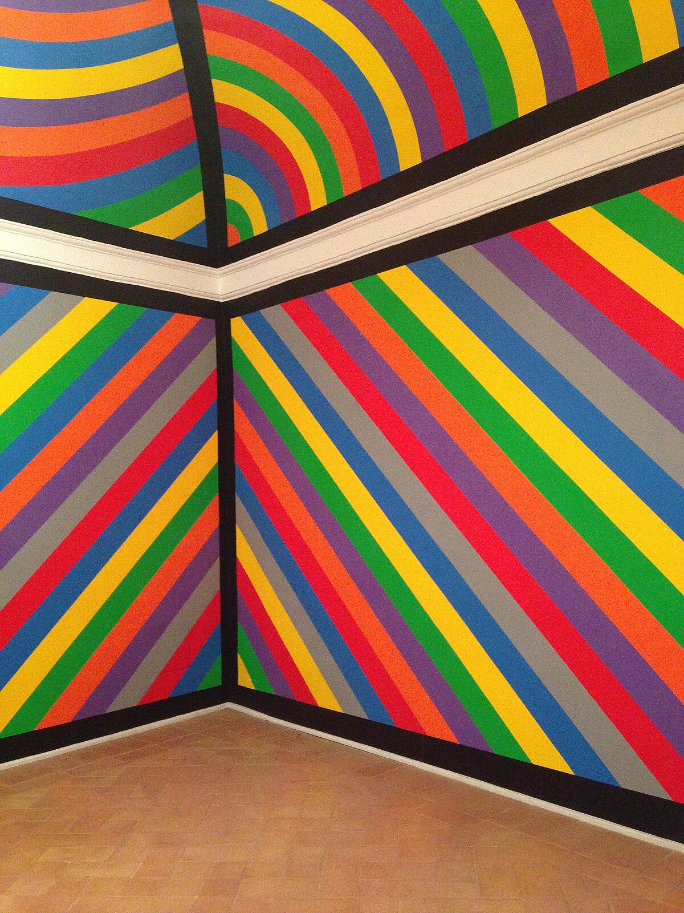
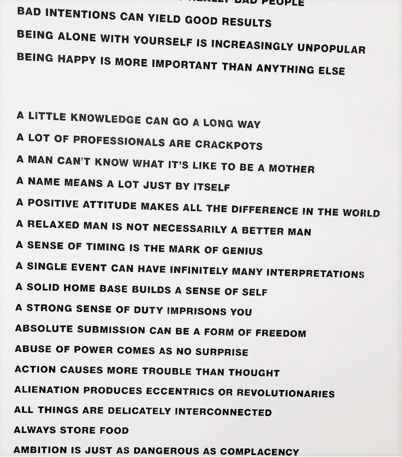
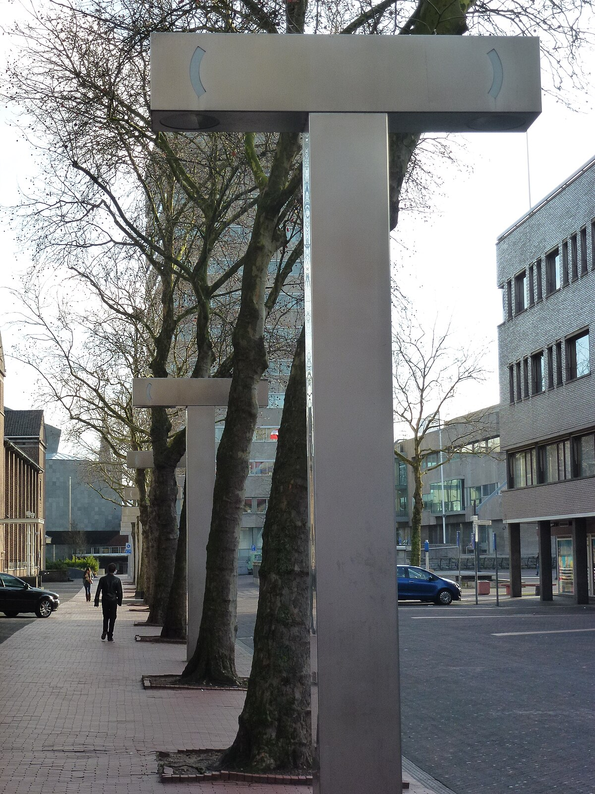
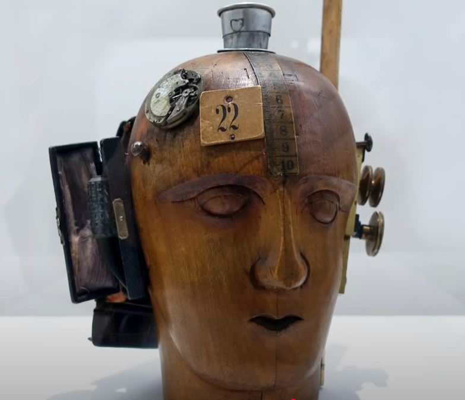

Meesterwerk: One and Three Chairs
Joseph Kosuth, 1965

⚜️ STIJLFIGUREN & KENMERKEN
💡 HET CONCEPT ALS MEDIUM
Dematerialisatie: Het fysieke kunstwerk is secundair. Het idee telt.
Taal: Woorden, definities, instructies. Tekst als beeld.
🔗 Tijdsgeest Connecties
Filosofie: Wittgenstein's "Philosophical Investigations" (1953) - taal als spel, betekenis door gebruik
Wetenschap: Informatietheorie (Shannon, 1948) - ideeën als overdraagbare data
Kunst: Duchamp's readymades - het concept belangrijker dan het handwerk
🏛️ INSTALLATIE & RUIMTE
Ruimte als medium: De galerie is onderdeel van het werk.
Context: Waar kunst wordt getoond bepaalt wat kunst is.
🔗 Tijdsgeest Connecties
Politiek: Institutional Critique - kritiek op het museum als machtsstructuur
Filosofie: Foucault's "Discipline and Punish" (1975) - instituties vormen subjectiviteit
Architectuur: Minimalisme - kunst als ruimtelijke ervaring
🎭 PERFORMANCE & ACTIE
Body art: Het lichaam als canvas en medium.
Ephemeraliteit: Kunst die slechts een moment bestaat.
🔗 Tijdsgeest Connecties
Politiek: Vietnamprotesten - actie als expressie, kunst als protest
Psychologie: Anti-psychiatrie (R.D. Laing) - het lichaam als politiek strijdtondeel
Feminisme: Vrouwelijke kunstenaars claimen hun lichaam terug
📄 DOCUMENTATIE
Foto's, teksten, certificaten: Het spoor van het kunstwerk.
Archief: Herinnering als kunstvorm.
🔗 Tijdsgeest Connecties
Wetenschap: Semiotiek (Peirce, Barthes) - teken, object, interpretant
Literatuur: Oulipo - kunst door regels en systemen
Technologie: Xerox-kunst - reproductie als creatie
📚 TIJDSGEEST CONTEXT ()
🌍 POLITIEK PERSPECTIEF
De Conceptual Art (1960-1980) ontwikkelde zich in een politieke context die werd gekenmerkt door de Koude Oorlog, de Vietnamoorlog, studentenprotesten en de bredere culturele revolte van de jaren zestig en zeventig. De politieke structuur werd gedomineerd door de strijd tegen de oorlog, de strijd voor burgerrechten, vrouwenrechten en homorechten, en de bredere kritiek op het kapitalisme, het imperialisme en de gevestigde orde. De Conceptual Art ontwikkelde zich als een radicaal antwoord op de traditionele opvattingen over kunst: zij stelde dat het "idee" of "concept" achter een kunstwerk belangrijker was dan de materiële realisatie. Kunstenaars als Joseph Kosuth, Sol LeWitt, Lawrence Weiner, Yoko Ono en de groep Art & Language creëerden werken die bestonden uit taal, instructies, documentatie of eenvoudige gebaren, waarbij de materiële vorm secundair of zelfs irrelevant was.
De sociale dynamiek werd gekenmerkt door een fundamentele revolte tegen de kunstmarkt, de galerijen, de musea en de hele institutionele structuur van de kunstwereld. De conceptual artists verachtten de commercialisering van kunst, de verheerlijking van het kunstenaarsgenie en de materialistische focus op unieke, kostbare objecten. Zij zochten naar vormen van kunst die niet konden worden gekocht, verkocht of verzameld: taal, ideeën, tijdelijke installaties, performances, documentatie. Joseph Kosuth's "One and Three Chairs" (1965), dat bestond uit een echte stoel, een foto van die stoel en een definitie van het woord "stoel", stelde fundamentele vragen over de aard van representatie, betekenis en kunst. Sol LeWitt's "Wall Drawings", die bestonden uit instructies die door anderen konden worden uitgevoerd, ontkoppelden het kunstwerk van de hand van de kunstenaar.
De politieke dimensie van de Conceptual Art was expliciet en fundamenteel. Vele conceptual artists waren politiek radicaal: zij gebruikten kunst als een instrument van kritiek, protest en revolutie. De feministische kunstbeweging, met kunstenaars als Judy Chicago, Miriam Schapiro en de groep Guerrilla Girls, gebruikte conceptuele strategieën om de patriarchale structuur van de kunstwereld aan de kaak te stellen. De artistieke kritiek op de Vietnamoorlog, met werken als Chris Burden's "Shoot" (1971), waarin de kunstenaar zich liet schieten door een assistent, gebruikte extreme vormen van performance en conceptuele kunst om de gewelddadigheid van de oorlog te verbeelden. De Conceptual Art ontwikkelde zich ook in relatie tot linkse politieke theorie, met name het marxisme en de kritische theorie, die de rol van kunst in de kapitalistische samenleving bevraagden.
De verbinding tussen politiek en artistieke stijl was direct en intentioneel. De Conceptual Art's verheerlijking van het idee boven de materiële realisatie was een revolte tegen de commercialisering van kunst en de rol van de markt in de bepaling van waarde. Door kunstwerken te creëren die niet konden worden gekocht of verkopen - taal, instructies, tijdelijke installaties - onttrokken de conceptual artists zich aan de logica van het kapitalisme. Tegelijkertijd stelden zij fundamentele vragen over de aard van kunst, betekenis en representatie: wat is kunst als de materiële vorm irrelevant is? Wat is de rol van de kunstenaar, de kijker, de context in de bepaling van betekenis? De Conceptual Art was daarmee niet slechts een esthetische beweging, maar een filosofische en politieke revolte tegen de gevestigde orde van de kunstwereld en de bredere kapitalistische samenleving.
Bronnen: Wikipedia - Conceptual art, Joseph Kosuth, Sol LeWitt, Art & Language, Feminist art movement, Vietnam War protests, Institutional critique.
📖 LITERAIR PERSPECTIEF
- Postmodernisme breekt door
- Roland Barthes "The Death of the Author" (1967) - de maker is dood, de lezer bepaalt betekenis
- Derrida's deconstructie (1967) - geen absolute waarheid, alleen interpretatie
- Burroughs' "cut-up" techniek
- Oulipo (Ouvroir de littérature potentielle) - literatuur door wiskundige regels
- Taal wordt materiaal, betekenis wordt vloeibaar
🧠 PSYCHOLOGISCH PERSPECTIEF
- Anti-psychiatrie (R
- Laing, "The Divided Self", 1960) stelt dat waanzin een rationele reactie is op een irrationele wereld
- Herbert Marcuse's "One-Dimensional Man" (1964) bekritiseert de conformiteit van de consumptiemaatschappij
- Het individu zoekt bevrijding van instituties
- Kunst wordt een middel om "normale" waanzin te ontmaskeren
⚙️ HISTORISCH PERSPECTIEF
- De ruimtevaart (maanlanding 1969) toont dat mensen grenzen kunnen verleggen
- De pil (1960) revolutioneert seksualiteit en genderrollen
- Televisie wordt massamedium - beelden zijn overal
- De copy-paste cultuur ontstaat: Xerox (1959), later digitaal
- Authenticiteit wordt een vraagstuk
- Als alles gekopieerd kan worden, wat is dan het origineel?
🎭 FILOSOFISCH PERSPECTIEF
- Ludwig Wittgenstein's latere werk ("Philosophical Investigations", 1953) stelt dat betekenis voortkomt uit gebruik, niet uit essentie
- "Art as Idea as Idea" (Kosuth) - kunst is definitie, niet object
- Marcel Duchamp's erfenis: het concept is belangrijker dan de uitvoering
- Het kunstwerk is een vraag, geen antwoord
- De kijker wordt mede-schepper van betekenis
🎨 TIEN MEESTERWERKEN - GEDETAILLEERDE ANALYSE
1. "One and Three Chairs" (1965) — Joseph Kosuth
Verschillende collecties | Houten stoel, foto van stoel, tekstpaneel | 82 × 37 × 53 cm

Achtergrond
Het paradigmatische werk van conceptuele kunst: een fysieke stoel, een foto van die stoel, en een verklarende tekst. Kosuth presenteert drie representaties van "stoel" en vraagt: welke is het "echte" kunstwerk? Het idee van stoel is belangrijker dan elk object.
🔍 STIJLANALYSE
Semiotiek: Het object, de afbeelding, de definitie - drie representatieniveaus.
Taal-filosofie: Wittgensteiniaanse vragen over betekenis en referentie.
Dematerialisatie: Het concept "stoel" staat centrum, niet de fysieke items.
Instrumentaliteit: De objecten zijn hulpmiddelen voor het idee - wegwerpbare tools.
2. "Wall Drawing #1136" (2004) — Sol LeWitt
Tate Modern, Londen | Inkt op muur | Variabele afmetingen

Achtergrond
LeWitt schreef instructies die door anderen worden uitgevoerd. De "kunstenaar" is de conceptuele maker; de "uitvoerders" zijn ambachtslieden. Dit democriteert kunstproductie en bevraagt het romantische idee van het unieke genie.
🔍 STIJLANALYSE
Instructie als kunst: Het conceptuele plan is primair; de uitvoering is secundair.
Reproduceerbaarheid: Hetzelfde werk kan opnieuw gemaakt worden volgens de instructies.
Geometrie: Systematische, wiskundige benadering van compositie.
Anonimiteit: LeWitt's hand is niet zichtbaar - de kunstenaar treedt terug.
3. "Cut Piece" (1964) — Yoko Ono
Performance | Yamaichi Concert Hall, Kyoto | 20 minuten

Achtergrond
Ono zat stil op het podium terwijl het publiek stukjes van haar kleding mocht knippen. Een radicale overdracht van controle en een onderzoek naar gender, kwetsbaarheid, en geweld. Het werk is tijdelijk, uniek per uitvoering, en kan nooit worden gereproduceerd.
🔍 STIJLANALYSE
Participatie: Het publiek IS het werk - zonder hun actie gebeurt er niets.
Vrouwelijk lichaam: Een feministische statement over eigendom en objectificatie.
Kwetsbaarheid: Het offer van het zelf als artistieke strategie.
Trust: Een experiment in menselijke natuur - wat doet een publiek met macht?
4. "I Will Not Make Any More Boring Art" (1971) — John Baldessari
Nova Scotia College of Art and Design | Muurtekst, uitgevoerd door studenten

Achtergrond
Baldessari vroeg studenten om deze zin herhaaldelijk op een muur te schrijven, als een soort strafregels. Een ironische en zelfreferentiële statement over wat kunst is of zou moeten zijn. De boodschap is simpel maar de implicaties zijn complex.
🔍 STIJLANALYSE
Ironie: Het werk zelf IS vervelend - het moet duizenden keren geschreven worden.
Deconstructie: Het ondermijnen van kunst als "belangrijk" of "diepgaand".
Collaboratie: De kunstenaar als directeur, niet als maker - studenten als handen.
Regel als kunst: Het pedagogische strafregel-formaat als esthetisch statement.
5. "Shapolsky et al. Manhattan Real Estate Holdings" (1971) — Hans Haacke
Documentaire installatie | Foto's, teksten, grafieken | Museum afhankelijk

Achtergrond
Haacke documenteerde de vastgoedpraktijken van een New Yorkse slumlord. Het Guggenheim Museum weigerde het tentoon te stellen en ontsloeg de curator. Dit werk lanceerde "Institutional Critique" - kunst die de machtsstructuren van musea blootlegt.
🔍 STIJLANALYSE
Onderzoeksjournalistiek: Kunst als onderzoek, exposé, politieke actie.
Institutionele kritiek: Het museum wordt onderdeel van het onderwerp - wie financiert kunst?
Documentaire esthetiek: Geen "kunstenaarsstijl" maar neutrale presentatie van feiten.
Censuur: De afwijzing door het Guggenheim werd onderdeel van het werk's geschiedenis.
6. "The True Artist Helps the World by Revealing Mystic Truths" (1967) — Bruce Nauman
Privécollectie | Neon buis | 59 × 55 × 5 cm

Achtergrond
Een neon spiralel met de tekst die de titel vormt. Nauman ironiseert het romantische kunstenaarsideaal terwijl hij het tegelijkertijd bevestigt. Het werk hangt als een café-uithangbord maar presenteert een hoogdravende boodschap over kunstenaarschap.
🔍 STIJLANALYSE
Ironie: De hoogdravende tekst in commerciële neon stijl - ernst of grap?
Taal als beeld: De woorden zijn letterlijk lichtgevend - taal als verlichting.
Spiraal: De vorm verwijst naar mystieke symboliek en oneindigheid.
Kitsch: Commerciële esthetiek toegepast op "serieuze" kunst.
7. "A 36\" x 36\" Removal to the Lathing or Support Wall of Plaster or Wallboard from a Wall" (1968) — Lawrence Weiner
Taalwerk - kan op muur worden geschilderd of op papier worden getoond

Achtergrond
Weiner's werk bestaat uit tekst die een actie beschrijft. Het kan worden uitgevoerd (op een muur geschilderd) of gewoon worden gelezen. De kunstenaar beweert: "Het werk bestaat zolang iemand het begrijpt." Een radicale dematerialisatie van het kunstobject.
🔍 STIJLANALYSE
Taal als sculptuur: Woorden worden driedimensionale instructies voor verbeelding.
Optioneel maken: Het fysieke werk is niet nodig - het concept is genoeg.
Democratie: Iedereen kan het werk "maken" door de instructies te volgen.
Industrial aesthetic: De taal is technisch, droog, functioneel - geen poëzie.
8. "Seedbed" (1972) — Vito Acconci
Sonnabend Gallery, New York | Performance | 3 weken

Achtergrond
Acconci lag verborgen onder een houten vloer in de galerie en masturbeerde terwijl bezoekers boven hem liepen. Hij fluisterde fantasmen via speakers. Een grensoverschrijdend werk over intimiteit, exhibitionisme, en de relatie tussen kunstenaar en publiek.
🔍 STIJLANALYSE
Seksualiteit als medium: Het meest private wordt publieke performance.
Geluidslandschap: De bezoeker hoort maar ziet niets - een auditieve ervaring.
Architectuur: De vloer als grens tussen publiek en privé, gezien en ongezien.
Obsessie: De repetitieve daad als artistieke discipline - extreme toewijding.
9. "Index 01" (1972) — Art & Language
Documentaire installatie | Foto's, teksten, lijsten | Variabele afmetingen

Achtergrond
Een collectief van kunstenaars en filosofen documenteerde hun eigen gesprekken en presenteerde deze als kunstwerk. Het werk bestaat uit teksten, indices, en verwijzingen naar andere teksten. Een radicale bewering dat taal zelf het medium van kunst kan zijn.
🔍 STIJLANALYSE
Collectiviteit: Geen individuele kunstenaar maar een groep - auteurschap vervaagd.
Referentialiteit: Teksten die naar teksten verwijzen - oneindige regress.
Anti-visueel: Kunst die je moet lezen, niet zien - intellectuele uitdaging.
Filosofische kunst: De grens tussen kunst en filosofie wordt uitgewist.
10. "An Oak Tree" (1973) — Michael Craig-Martin
National Gallery of Australia, Canberra | Glas water op plank | 7.5 × 25 × 11.5 cm

Achtergrond
Een glas water op een plank, vergezeld door tekst waarin Craig-Martin beweert dat dit een eikenboom IS. Hij legt uit dat de verandering niet fysiek maar conceptueel is. Een extreme test van de kracht van artistieke intentie - kan het woord de werkelijkheid veranderen?
🔍 STIJLANALYSE
Geloof: Kunst als geloofssysteem - het werkt als je het accepteert.
Transubstantiatie: Een seculiere versie van het christelijke dogma (brood wordt lichaam).
Magie: De kunstenaar als tovenaar die transformatie bewerkstelligt.
Absurditeit: Logica opgedreven tot het onmogelijke - een glas water is geen boom.